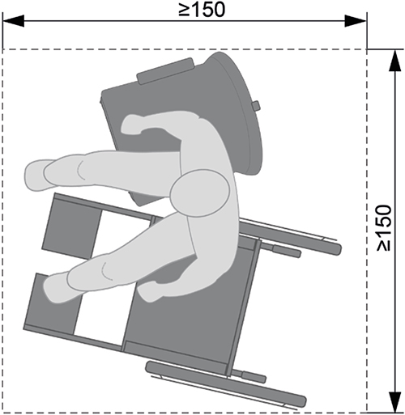
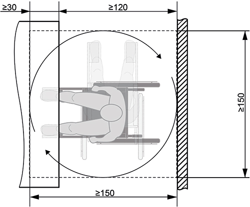
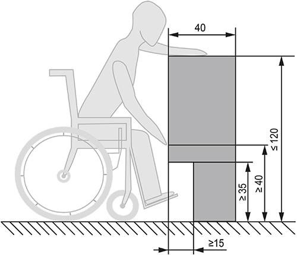
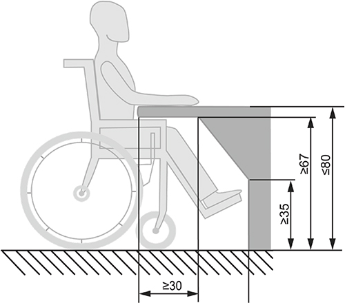
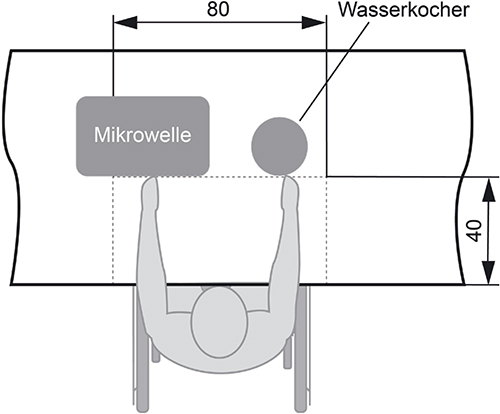

(1) Eine Kantine ist ein Raum innerhalb der Arbeitsstätte, der zur Bereitstellung und Aufnahme von Speisen und Getränken insbesondere für die Beschäftigten vorgesehen ist, z. B. Betriebsrestaurant, Cafeteria, Bistro. Falls dazu angrenzende Bereiche im Freien gehören, z. B. Terrassen, sind die nachfolgenden Anforderungen auch dort entsprechend zu berücksichtigen.
(2) Beim Einrichten und Betreiben von Kantinen sind die besonderen Belange von Beschäftigten mit Behinderungen zu berücksichtigen. Je nach Auswirkung der Behinderung ist insbesondere auf Auffindbarkeit, Wahrnehmbarkeit, Erkennbarkeit, Erreichbarkeit und Nutzbarkeit der Kantine zu achten.
(3) Die Auffindbarkeit von Kantinen kann erforderlichenfalls für Beschäftigte mit Sehbehinderung und für blinde Beschäftigte z. B. durch ein geeignetes Informations- und Leitsystem hergestellt werden. Dabei ist das Zwei-Sinne-Prinzip zu berücksichtigen. Alternativ ist ein Mobilitätstraining möglich.
(4) Wahrnehmbarkeit und Erkennbarkeit von Informationen zu Inhaltsstoffen von Lebensmitteln oder zu Preisen, z. B. auf dem Speiseplan, sind für Beschäftigte mit Sinneseinschränkungen bei Anwendung des Zwei-Sinne-Prinzips gegeben. Das wird erreicht:
Die Informationen können auch barrierefrei zur Verfügung gestellt werden, z. B. über mobile Anwendungen (z. B. Apps auf Smartphone), per E-Mail oder über das Intranet/Internet.
Hinweise:
(5) Wahrnehmbarkeit und Erkennbarkeit der Funktion sowie die Nutzbarkeit von Geräten, z. B. von Aufwerteautomaten, Kassensystemen und Kartenlesegeräten, sind sicherzustellen. Das wird durch Anwendung des Zwei-Sinne-Prinzips erreicht, z. B. indem die Bedienelemente:
Die Funktionsauslösung muss wahrnehmbar zurückgemeldet werden, z. B. durch Quittierton, Druckpunkt oder Lichtsignal.
(6) Die Anforderungen an die Alarmierung der Beschäftigten mit einer Seh- oder Hörbehinderung sind im Absatz 2 des Anhangs A2.2 "Ergänzende Anforderungen zur ASR A2.2 'Maßnahmen gegen Brände'" geregelt.
(7) Die Kantine soll leicht und direkt erreichbar sein (zu Fuß, mit Hilfsmitteln oder mit betrieblich zur Verfügung gestellten Verkehrsmitteln).
(8) Die Verkehrswege zur und in der Kantine sind gemäß Anhang A1.8 "Ergänzende Anforderungen zur ASR A1.8 'Verkehrswege'", Türen und sonstige Durchgänge gemäß Anhang A1.7 "Ergänzende Anforderungen zur ASR A1.7 'Türen und Tore'" zu gestalten. Dabei sind auch die Anforderungen der Anhänge A1.3 "Ergänzende Anforderungen zur ASR A1.3 'Sicherheits- und Gesundheitsschutzkennzeichnung'" und A2.3 "Ergänzende Anforderungen zur ASR A2.3 'Fluchtwege und Notausgänge'" zu berücksichtigen.
(9) Für Rollatoren, Rollstühle oder Gehhilfen von Beschäftigten sind gegebenenfalls Stell-/Bewegungsflächen in der Kantine erforderlich, z. B. für das Umsetzen vom Rollstuhl auf eine andere Sitzgelegenheit. Dafür ist eine Bewegungsfläche von mindestens 1,50 m x 1,50 m erforderlich (siehe Abbildung 1). Für Rollatoren und Gehhilfen ist eine Bewegungsfläche von mindestens 1,20 m x 1,20 m ausreichend.

Abb. 1: Mindestgröße der Bewegungsfläche für Rollstühle beim Umsetzen in der Kantine (Maße in cm)
(10) In Abhängigkeit von den individuellen Erfordernissen der Beschäftigten mit Behinderungen sind zusätzliche Flächen in der Kantine notwendig, z. B. für einen Elektrorollstuhl oder einen Assistenzhund (z. B. Blindenführhund).
(11) Für Beschäftigte, die einen Rollstuhl benutzen, muss die Bewegungsfläche bei Nichtunterfahrbarkeit von Ausstattungselementen mindestens 1,50 m x 1,50 m und bei Unterfahrbarkeit mindestens 1,50 m x 1,20 m betragen (siehe Abbildung 2).

Abb. 2: Überlagerung von Stell- und Bewegungsflächen bei Unterfahrbarkeit von Ausstattungselementen (Maße in cm)
(12) Die Nutzbarkeit aller notwendigen Einrichtungen und Ausstattungen einer Kantine ist gegeben, wenn z. B.:

Abb. 3: Greifhöhe, Greiftiefe und Unterfahrbarkeit (Maße in cm)
(13) Für Beschäftigte, die aufgrund einer Behinderung eine bestimmte Diät einhalten müssen, sind gegebenenfalls Einrichtungen für das Wärmen und Zubereiten von Lebensmitteln zur Verfügung zu stellen. Dabei muss für Beschäftigte, die einen Rollstuhl benutzen, bei frontaler Anfahrt die Unterfahrbarkeit gegeben sein (siehe Abbildung 4). Die Nutzbarkeit von z. B. Wasserkocher oder Mikrowelle ist innerhalb einer Fläche von maximal 80 cm Breite x 40 cm Tiefe zu gewährleisten (siehe Abbildung 5).

Abb. 4: Unterfahrbarkeit der Nutzungsfläche (Maße in cm)

Abb. 5: Greifbereich auf der Nutzungsfläche (Maße in cm)
(14) Kann aufgrund der Behinderungsart (z. B. Beschäftigte, die motorisch eingeschränkt sind oder einen Rollstuhl benutzen) das Tablett nicht transportiert werden, ist an der Essenausgabe eine Transporthilfe, z. B. ein Tablett-Transportwagen, zur Verfügung zu stellen.
(15) Für kleinwüchsige Beschäftigte müssen Tische und Sitzgelegenheiten nutzbar sein, z. B. durch Anpassen der Sitzhöhe sowie Bereitstellen einer Fußstütze und Aufstiegshilfe. Für Beschäftigte, die einen Rollstuhl benutzen, muss die Unterfahrbarkeit gegeben sein (siehe Abbildung 4).
(16) Sind Hoch- bzw. Stehtische vorhanden, müssen in deren räumlicher Nähe für kleinwüchsige Beschäftigte und für Beschäftigte, die einen Rollstuhl benutzen, für sie nutzbare Tische bereitgestellt werden, z. B. Stehtische mit zwei unterschiedlichen Ebenen.
(17) Wenn es die Art der Behinderung (z. B. Echte Migräne, Autismus-Spektrum-Störung, Hörbehinderung) erfordert, sind Beschäftigte vor störendem oder belästigendem Lärm zu schützen, z. B. durch Bereitstellung eines ruhigen Bereichs oder durch raumakustische Maßnahmen.